1. gitbook.com 官网操作
gitbook 官网是官方提供的图书托管的在线平台,分为新版官网(需要FQ) https://www.gitbook.com/ 和旧版官网(无需FQ) https://legacy.gitbook.com 两个网站.
目前均正常提供服务,但令人遗憾的是,两个网站的信息相互独立,而且现在注册的账号默认只能在新版官网中使用,而新版官网的访问速度简直比 github 还要慢,所以国内用户在线访问你的电子书真的需要点技术手段了!
本文主要介绍 www.gitbook.com 官网的基本使用,而 legacy.gitbook.com 网站我就算是想介绍也没有账号测试啊.
"巧妇难为无米之炊",明明你就在那里,可我却什么也做不了.
先大概说一下 gitbook.com 网站的一些个人总结吧.
gitbook.com 提供收费和免费服务,有点像早期的 github ,免费账号只能创建一个私有的命名空间,其他命名空间只能是公开的,这里的命名空间可以理解为一本书.
这一点是不是有点像早期的 github.com?免费账号无法创建私有仓库,只能是公开仓库.
(现在 github.com 已被微软收购,目前可以创建无限量的私有仓库了!)
再说 gitbook 的账号问题,像 github 一样提供用户名和邮箱登录方式,他们的用户名都可以作为二级域名,比如我的用户名是snowdreams1006,那么我的 gitbook 第一本电子书网址就是 https://snowdreams1006.gitbook.io/index/ ,再看一下我的 github 个人网址 https://snowdreams1006.github.io/ ,这两个是不是很类似?!
如果不仔细看的话,八成你会觉得一样,一个是gitbook.io,另一个是github.io.
所以我严重怀疑他俩是不是有着不为人知的私密关系,太多的相似性,鼓励分享,限制私有等等特点.
无图无真相,趁着这次教程顺便将 github 个人网站项目同步到 gitbook 电子书项目了,这样的好处是本地只需要推送到 github ,自动更新 github.io 网站(利用的是github 静态网站托管服务) ,然后再自动同步到 gitbook.io 网站.
是不是很神奇,一份源码,两个官网!
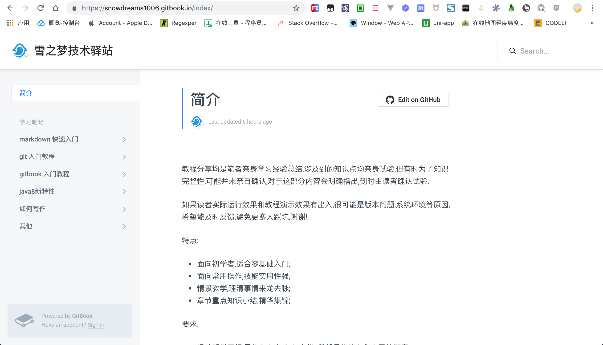
gitbook : https://snowdreams1006.gitbook.io/
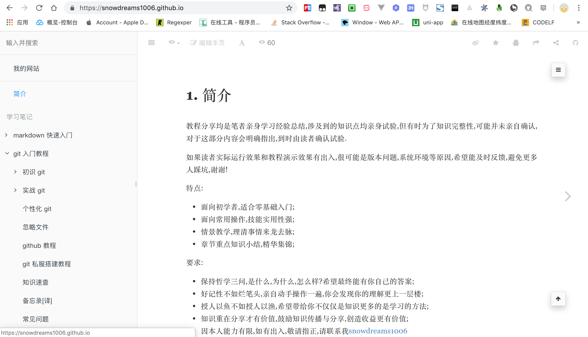
github : https://snowdreams1006.github.io/
2. 注册并登陆 gitbook.com
注册信息主要包括用户名和邮箱,还有一些其他信息,没什么特殊的注意事项.
访问 https://www.gitbook.com/ 需要 FQ
3. 新建命名空间(电子书)
注册账后后会默认生成一个私有的命名空间,因为并不打算将私有电子书托管到 gitbook,所以接下来直接将其转变成公开电子书进行演示.

3.1. 个性性配置
3.1.1. 标题和图片
3.1.2. 主题颜色和页面反馈
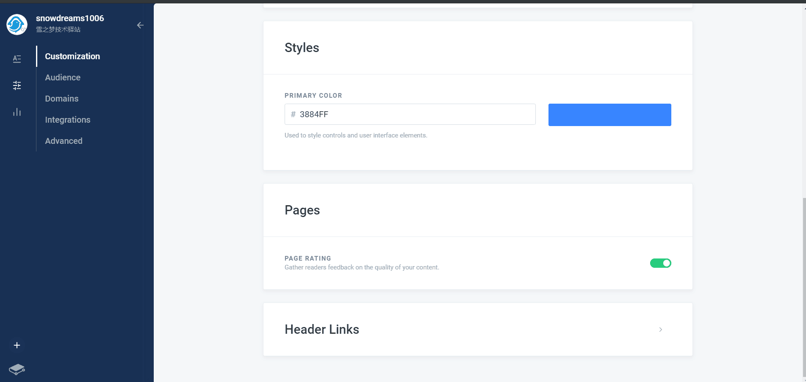
3.2. 观众
观众指的是当前电子书面向的受众是谁,公开的和私有的的区别以及设置是否被谷歌搜索收录.
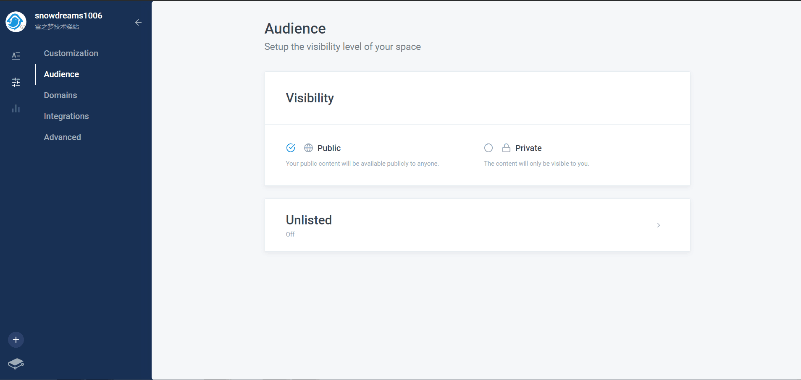
3.3. 域名
默认域名是 https://snowdreams1006.gitbook.io/<space>,如果需要自定义域名,请保证 dns 能够正确解析到该网站.
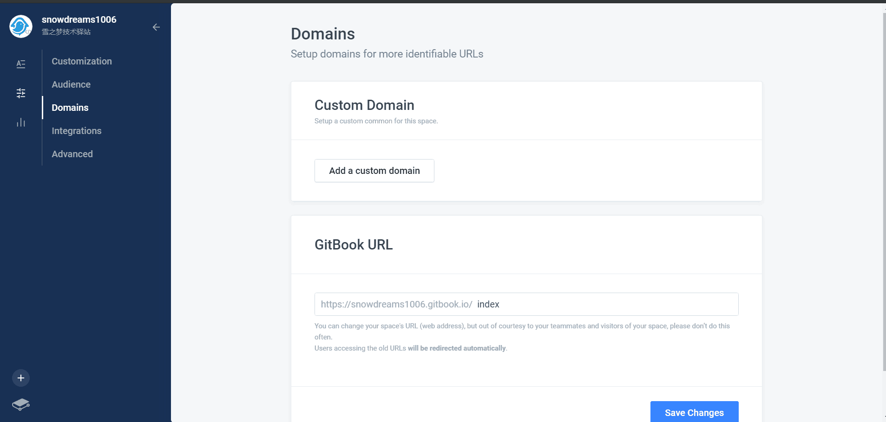
url 设置的命名空间是
index,因此最终访问路径是https://snowdreams1006.gitbook.io/index/
3.4. 整合
gitbook 默认提供4种整合方式,在下孤陋寡闻只了解 github ,其余三种没接触过,暂不涉及.
3.4.1. 选择 github 进行整合
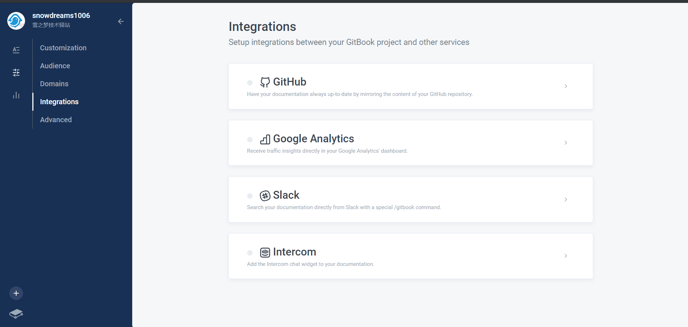
3.4.2. 登录 github 并授权
选择列出公开的仓库,然后输入用户名和密码进行登录并授权.
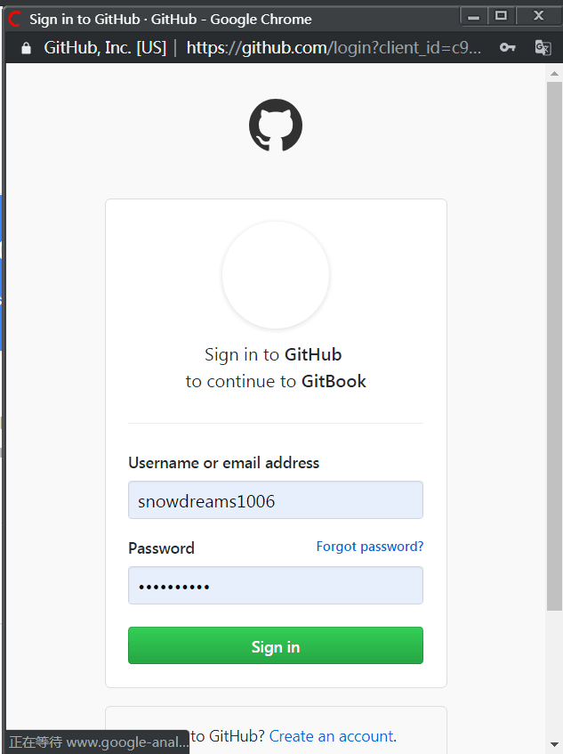
3.4.3. 选择目标仓库
授权成功后会列出当前 github 账号下全部的公开仓库,选择目标仓库并点击下一步.
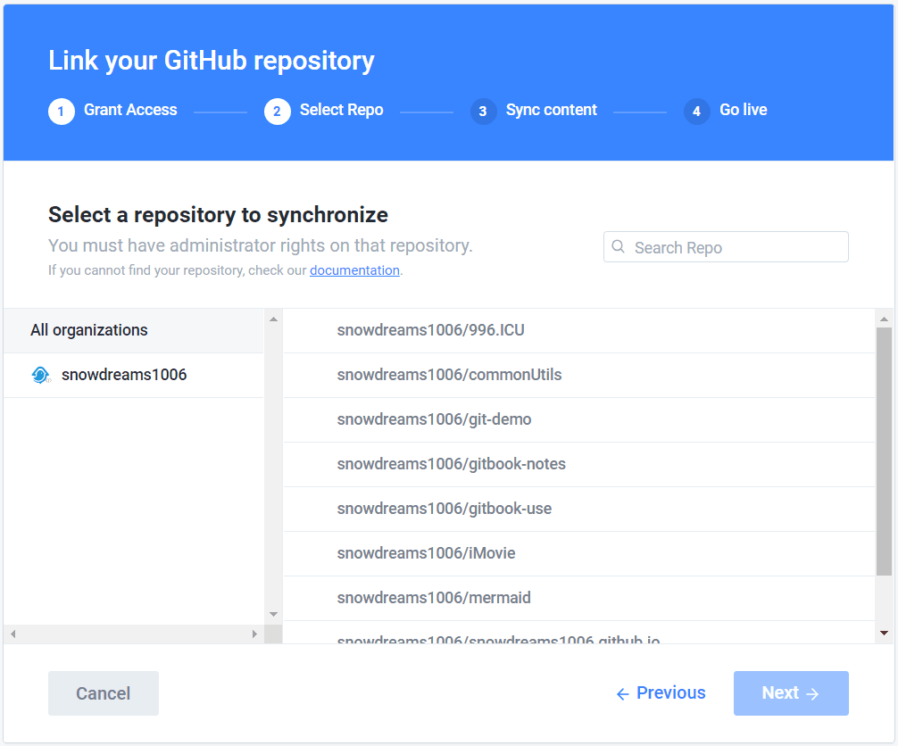
这里以 snowdreams1006.github.io 公开仓库为例,因为该仓库是本人官网源码项目.
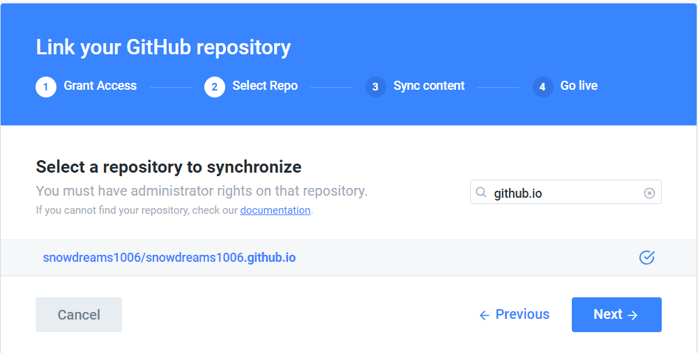
3.4.4. 同步内容
选择同步分支
根据实际情况选择同步分支,因为我一般是直接推送到 master 分支,所以 master 分支是个人网站的维护分支,因此这一步我选择的是 master.
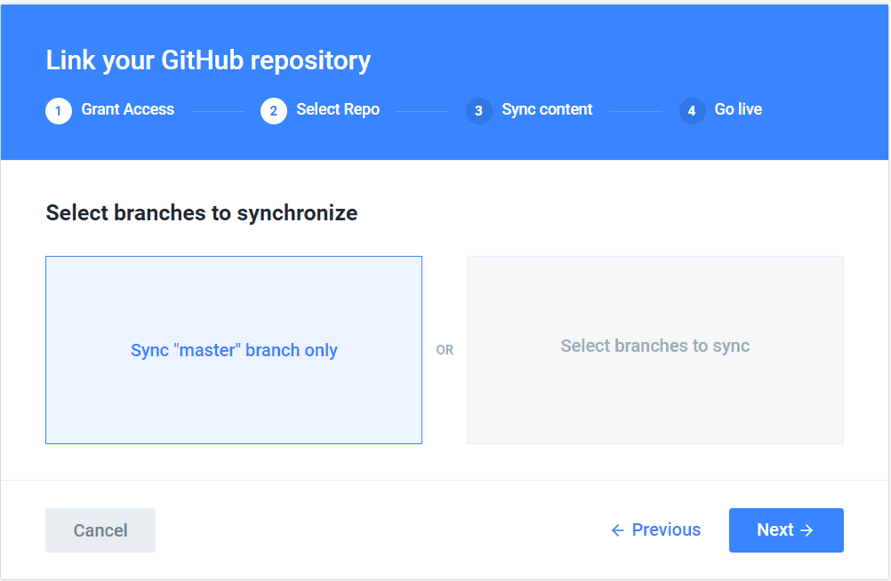
选择同步内容
选择同步内容的方式,是从 github 同步到 gitbook,还是从 gitbook 同步到 github,因为我的项目已托管到 github ,所以初次同步内容选择的是 github --> gitbook.
显示 github 按钮
生成的电子书网站是否显示 github 按钮,作用是点击该按钮会跳转到关联的github 仓库上.
此时心里在想,万一点进 github ,随手就是一个 star 呢?哈哈!
等待内容导入
根据目标仓库的大小不同,导入内容是的时长自然也不一样,耐心等待...
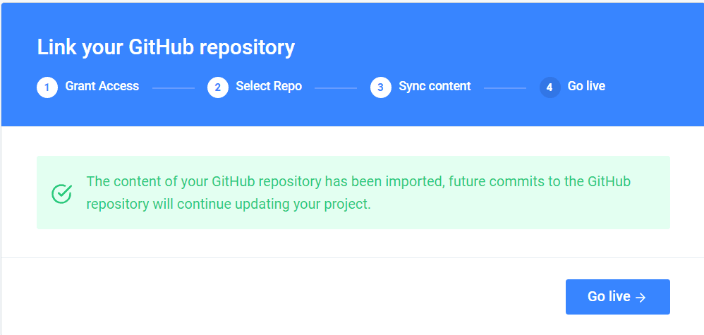
3.4.5. 上线
导入完成,电子书终于正式上线了!
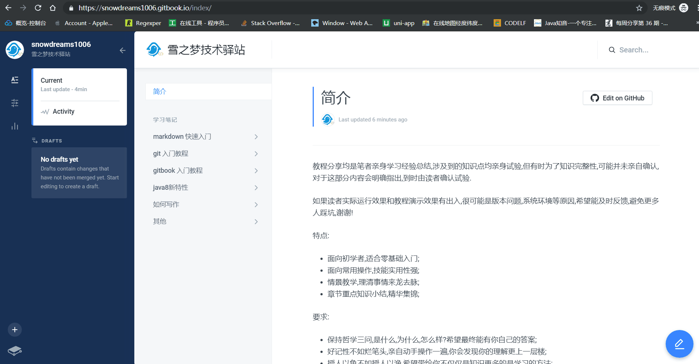
现在赶紧分享一下好消息吧,访问 https://
4. 小结
本文以如何集成 github 为例,演示了 gitbook.com 发布电子书的基本流程,由于 gitbook 电子书内容来自于 github 项目,因此我们只要更新 github 仓库,我们的 gitbook 电子书网站自然也就相应更新了!
gitbook 是 markdown 和 github 的完美结合体,借助 gitbook.com 官网我们很容易发布并托管电子书.
美中不足的是,国内无法正常访问 gitbook.com ,因此并不是很推荐将电子书发布到 gitbook.com 网站.
现在国内也有类似的产品,有一种产品叫做 看云,还不错!
后续还会介绍 gitbook 如何结合 github 发布个人网站,欢迎继续关注 gitbook 系列教程!
如何打造免费的个人官网,想了解
https://snowdreams1006.github.io/背后的故事吗?
作者: 雪之梦技术驿站
链接: https://snowdreams1006.github.io/myGitbook/experience/gitbook-com.html
来源: 雪之梦技术驿站
本文原创发布于「雪之梦技术驿站」,转载请注明出处,谢谢合作!